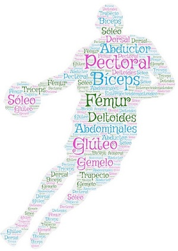

Introducción
El presente recurso contiene contenidos y actividades para trabajar y conocer mejor el aparato locomotor, más concretamente los músculos. Se encuentra incluido dentro del itinerario "Las funciones vitales de los seres vivos: la función de relación". Desarrolla contenidos del Bloque 2. El ser humano y la salud, del área de Ciencias de la Naturaleza, dentro del currículo de Educación Primaria.

A través de este recurso se pretende que el alumno sea capaz de conocer los músculos que forman el aparato locomotor, así como su funcionamiento y situación en el cuerpo humano, pudiendo reconocer su implicación en diferentes movimientos realizados en situaciones de su día a día.
Este recurso ha sido creado para alumnado de 6.º de Educación Primaria. Podrá desarrollarse en dos sesiones, organizando las distintas actividades en función de las necesidades del alumnado. Además de realizar actividades interactivas, también podrán llevarse a cabo otras tareas prácticas, así como de expresión escrita. El recurso también dispone de una rúbrica de evaluación, que se aporta tanto en formato PDF como en formato editable, para poder adaptar este recurso y su evaluación a las necesidades de los estudiantes.